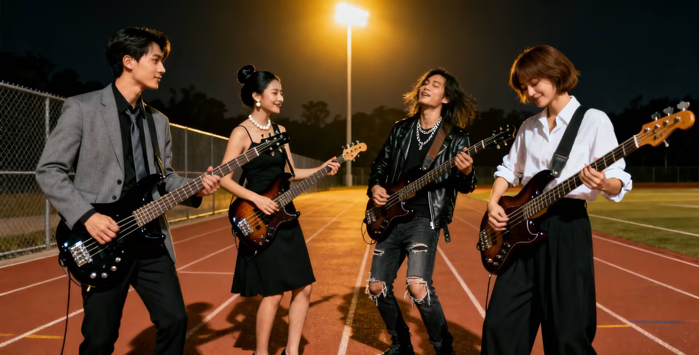

社团简介 | 活动安排 | 风采展示 | 社员故事 | 在线报名
在山东师范大学充满活力与激情的校园里， 有这样一个独特而魅力四射的社团——贝斯社团。 它宛如一颗璀璨的明珠，在校园文化的星空中闪耀着独特的光芒， 为热爱音乐、钟情贝斯的同学们提供了一个尽情挥洒热情与才华的舞台。
社团拥有一支实力雄厚、经验丰富的指导教师团队。 他们不仅在贝斯演奏技巧上有着深厚的造诣，而且对音乐教学有着独特的方法和见解。 在他们的悉心指导下，无论是零基础的初学者，还是有一定基础的进阶者，都能得到系统、专业的培训。 从最基本的持琴姿势、指法练习，到复杂的节奏型演奏、即兴创作， 指导教师们都会耐心地为每一位成员讲解和示范，确保大家能够在轻松愉快的氛围中不断提升自己的演奏水平。
社团的成员来自学校的各个年级和专业，他们怀揣着对贝斯的热爱和对音乐的梦想， 相聚在这个温暖的大家庭中。在这里，大家相互学习、相互交流、相互鼓励，共同成长。 社团定期组织各种形式的活动，如贝斯演奏技巧讲座、音乐分享会、乐队排练等。 在技巧讲座中，指导教师会结合实际演奏案例，为成员们讲解贝斯演奏中的各种技巧和方法； 音乐分享会上，成员们可以分享自己喜欢的音乐作品，交流对音乐的理解和感悟； 乐队排练则为大家提供了一个实践的平台，让成员们在团队合作中锻炼自己的演奏能力和协作能力。
除了内部活动，社团还积极参与学校和社会上的各种演出和比赛。 在学校的迎新晚会、校庆活动、文艺汇演等大型活动中，我们总能看到贝斯社团成员们精彩的表演。 他们用手中的贝斯，奏响了一曲曲激昂的乐章，赢得了师生们的阵阵掌声和欢呼声。 在社会上的各类音乐比赛中，社团成员们也凭借着扎实的基本功和出色的演奏技巧，取得了优异的成绩， 为学校和社团争得了荣誉。
贝斯社团不仅是一个学习和交流贝斯演奏的平台，更是一个培养团队精神和创造力的摇篮。 在社团里，每一位成员都能找到属于自己的位置，发挥自己的特长。 大家在共同追求音乐梦想的过程中，建立了深厚的友谊，形成了一种积极向上、团结协作的良好氛围。
展望未来，贝斯社团将继续秉承社团宗旨， 不断创新活动形式，提高活动质量，为更多热爱贝斯的同学提供学习和展示的机会。 我们相信，在学校领导和老师的关心支持下，在全体成员的共同努力下， 贝斯社团一定会在校园文化建设中发挥更加重要的作用，成为学校一道亮丽的风景线。
如果你也热爱贝斯，热爱音乐，那么就加入我们的贝斯社团吧！ 让我们一起用贝斯奏响青春的旋律，用音乐书写精彩的人生！
为了让大家更好地了解贝斯社的日常，本学期计划安排如下几项主要活动。 具体时间可能会根据学校统一安排略作调整，详情请关注社团通知。
| 贝斯社 2025 年秋季学期活动安排表 | |||
|---|---|---|---|
| 活动名称 | 活动时间 | 活动地点 | 负责人 |
| 新成员见面会 | 9 月 第 1 周 周末 | 社团活动中心大厅 | 王蕊婷 |
| 贝斯基础教学公开课 | 9 月 每周三 下午4：00-5：00 | 韩汶栩 | |
| 技巧提升与音乐感知 | 10 月 每周二 下午4：30-6：00 | 舞蹈教室 | 蒋鹏翰 |
| 乐队组建与排练 | 11 月 每周三 下午5：00-6：30 | 乐队排练室 | 王不染 |
| 校内小型演出 | 11 月 每周五 晚上7：00-9：00 | 学校操场 | 庞博文 |
| 期末贝斯专场音乐会 | 12 月 第 2 周 晚上7：00-9:00 | 文俊楼 演播厅 | 胡竞 |
上表仅列出了部分代表性活动，日常还会有贝斯小型即兴合奏会（社员们围绕一段律动自由发挥，碰撞创意火花）、 技巧经验分享沙龙（资深社员拆解slap、点弦等进阶技巧，解答练琴疑惑）、 复古贝斯音色品鉴会（一起探索不同年代贝斯设备的音色魅力，从Funk黄金年代的经典律动到现代前卫的电子融合风格）、 原创贝斯曲创作工作坊（从动机构思到段落编排，手把手教你写出属于自己的贝斯旋律线）等多元活动。 欢迎有想法、有创意的同学参与策划，无论是想打造专属主题的贝斯派对，还是开发趣味十足的练琴打卡计划， 或是发起一场“校园贝斯手街头快闪”“贝斯编曲大赛”，这里都能成为你施展创意的舞台， 让每一个奇思妙想都能在贝斯的低频世界里落地生根，绽放光彩。
下方是一张往届校园音乐会的精彩照片示意图，画面中贝斯社成员在夜色操场的聚光灯下尽情演奏， 复古的贝斯在指尖跳跃，低频律动与青春活力在晚风中交织成震撼的音浪。 若你对这场充满热血与热爱的音乐盛宴感兴趣，点击图片即可跳转至更详细的活动介绍页面， 那里不仅有完整的演出花絮、乐手们从排练到登台的幕后故事，还有现场高清音频片段可以试听。 你能看到社员们为了一个音符反复打磨的执着，能听到贝斯与鼓点碰撞出的极致律动， 更能沉浸式感受贝斯社用四根琴弦编织出的、专属于青春的热血乐章，每一处细节都在诉说着音乐与热爱的无限可能。
图中为上学期“夏日之声”校园音乐会上，贝斯社成员在舞台上的集体演奏场景。 他们以沉稳的低频律动为整场演出奠基，每一个slap技巧的迸发、每一段旋律的铺陈， 都是平日里在音乐教室反复打磨、在操场即兴排练的成果，所有的汗水与热爱， 都在正式演出的聚光灯下得到了最充分的展示。
贝斯社宣传视频内容介绍 这支宣传视频以“低频里的青春共鸣”为线索，用鲜活画面串联起社团日常与舞台高光。 开篇用贝斯琴弦震颤的特写搭配低沉音符切入，随即切换至排练室场景：老社员指导新人调整持琴姿势， 众人围坐研讨律动编排，偶尔穿插玩笑打闹的日常片段，尽显社团温暖氛围。 中段通过快剪呈现成长轨迹——从萌新握琴的生涩，到技巧沙龙上slap技法的练习，再到操场夜晚即兴合奏的自由，直观展现成员的进阶过程。 高潮部分聚焦舞台瞬间：校园音乐节上，贝斯手的激情演奏与台下观众的节奏摇摆交叉剪辑，低频律动与欢呼声响成一片， 将氛围推向顶点。结尾以社团大合照渐变为招新二维码收尾，自然传递加入邀约。 全片搭配适配的贝斯配乐与真实环境音，既展现了乐器魅力，也凸显了社团的热血与温情。
林薇刚加入贝斯社时，对贝斯的认知还停留在“乐队里那个声音低沉的乐器”。 她连贝斯的琴弦数量、基本指法都分不清，第一次社团排练时，抱着贝斯站在角落，紧张得手心冒汗。 在社长和老社员的耐心指导下，她从最基础的持琴姿势和八分音符律动练起。 每天晚自习结束后，她都会抱着贝斯去音乐教室“加练”一小时，反复打磨《Billie Jean》的贝斯线， 把每一个音符的时值和力度都抠到极致。一个学期后，她已经能精准把控《Another One Bites the Dust》的经典律动， 在校园“冬日音乐节”上，她作为乐队贝斯手登场，沉稳的低频律动让全场观众跟着节奏摇摆， 演出结束后，台下响起的掌声让她明白：那些在琴房里反复练习的日夜，都化作了舞台上的自信光芒。
陈默是出了名的“社恐”，平时在课堂上回答问题都会脸红，更别说在众人面前展示自己。 加入贝斯社，是他做过最“突破自我”的决定。 起初，他只敢在排练室角落默默练习，从不主动和其他社员交流。 直到一次社团组织“即兴jam”活动，社长特意把他的贝斯声线融入乐队编排里。 当他弹出的第一个音符和鼓点完美契合时，身边的吉他手对他竖起了大拇指，键盘手也笑着对他点头。 在后续的“校园乐队Battle”中，他所在的乐队一路晋级，决赛时他的一段slap solo惊艳全场。 谢幕时，他第一次主动和所有队员击掌，那一刻他意识到： 贝斯的律动不仅能连接音乐，更能打破心与心的壁垒，让他在音乐里找到了表达自我的勇气。
李响和张萌是在贝斯社“新生考核”时认识的。当时李响弹了一段激进的金属贝斯线，张萌却偏爱爵士贝斯的细腻律动， 两人还因“贝斯风格哪个更酷”争论了好几天。 但争论归争论，排练时他们却成了最默契的搭档。 李响练新曲子时，张萌会帮他纠正细节；张萌编排原创律动时，李响会给出节奏型建议。 他们一起泡在琴房，从《Come Together》练到原创作品，一起在livehouse看演出，甚至一起在操场的夜晚即兴合奏到深夜。 现在，他们组建的乐队成了校园里的“明星组合”，有人问他们“是什么让你们这么默契”， 他们总会相视一笑：“是贝斯的四根弦，把我们的灵魂都连在了一起。”
赵宇加入贝斯社时，正处于人生的“迷茫期”。他觉得专业课程枯燥，课余生活也毫无波澜。 直到一次社团组织的“老社员分享会”，他听到一位毕业学长说：“贝斯的每一个音符，都是我青春的刻度。” 这句话点醒了他。他开始认真对待每一次排练，把对生活的困惑、对未来的憧憬都融入贝斯的律动里。 他写了一首关于“成长阵痛”的原创贝斯曲，在社团专场音乐会上演奏时，台下有社员偷偷抹了眼泪——原来， 那些藏在低频里的情绪，早已引起了无数人的共鸣。 如今，赵宇即将毕业，他把自己的贝斯保养得锃亮，准备传给下一届社员。他说：“贝斯记录了我整个大学的情绪与成长， 哪怕以后不常弹了，只要听到相似的低频，就会想起这段在社团里的滚烫青春。”
如果你也渴望在四根琴弦上谱写属于自己的青春故事，渴望找到一群能和你“灵魂共振”的伙伴，欢迎加入贝斯社。 在这里，你的每一次拨弦，都是青春的律动；你的每一段成长，都有贝斯的低频为你见证。
校园贝斯社 · 2025 招新网页
咨询微信：11111111（王社长） | 每周五晚琴房开放日欢迎参观